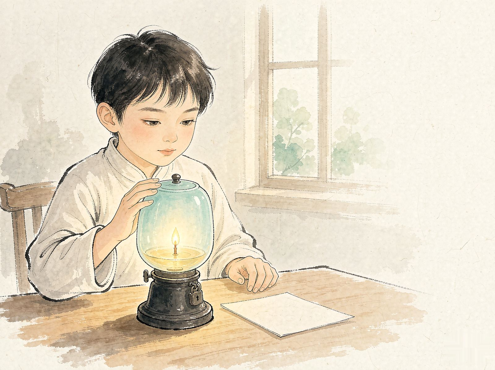

曰仁义，礼智信
对比「此四民，国之良」：上一节讲外在职业本分，是事上的标尺；五常是内在心性的根本德目，是判断何为「良」的底层内核。再对比前面九州、行省、四民，皆属后天分类、建制名相；五常是华夏心性体系里用来调伏自心、安顿人伦的常道。关键一层：五常不是外在强加的规矩条文，是人心本有的觉知潜能；但后世容易固化成教条，变成束缚人的框架，这正是需要勘破之处。
前面我们知道，各行各业尽责守正，就是国之良民。
那我们凭什么知道什么是正当、什么是本分？古人归纳了五种本心的德行：仁、义、礼、智、信。
仁，是心里愿意体谅、爱护别人；义，是知道什么该做、什么不该做，有底线；礼，是待人有恭敬、懂得分寸；智，是会分辨好坏，不盲从；信，是说话做事守承诺，不欺人、不自欺。

放到今天，道理不变。善待他人是仁，坚守底线是义，待人谦和有礼是礼，独立清醒分辨是非是智，信守约定是信。
这五样，不是用来向外评判别人的标尺，是拿来关照自己的心。

落到心上理解：五常是本心的功用，不是外在枷锁。若执着教条、死守条文而没有体恤、觉察之心，仁义礼智信就会变成僵化的外壳，是相，不是本体。守其本心，不执其形式，方是真五常。
把仁义礼智信当成固定规矩，刻板对照、苛责他人；只学外在礼仪说辞，内里无体恤、无觉察。
五德是心性的发用，随事合宜，内在为本；由内而外发起共情、明辨、守信，不拘泥形式。
- 仁义礼智信，称为五常，是人伦德行的五个面向。
- 五德根源在自心，不是别人定下用来约束我们的外在法则。
- 德行贵在活用，知分寸、懂变通，不可僵化死守形式。
- 前面说「国之良」，良的内核，正是这五常之心。
一、勘俗见。很多人理解五常就是老规矩、繁文缛节。重点区分：内核是心念，形式是载体；载体可变，本心常存。
二、现代对照。现代社会的同理心、契约精神、边界感、独立思辨、尊重他人，都可以对应五常的精神，只是外在表达形式和古时有差别。
三、承接常变主线。和九州、行省、四民一脉：外在仪轨属于可变之相，体恤、明辨、守信的本心是常。
四、承接教与学二分。家长引导孩子体会共情、底线、分寸、分辨、守信，属施教一侧；孩子在日常相处中慢慢觉察自心，是自主修习。
接上选择力练习：万象变迁，以五常观照自心，不取教条之相。
曰仁义，礼智信
一 · 字义与句读常，恒也。五常，恒常的德用。其目定于汉：董仲舒《举贤良对策》「仁义礼智信五常之道」，《白虎通·情性》列仁义礼智信为五性。
仁，二人之相与，推己及人；义，宜也，取舍合道；礼，履也，人伦次序、恭敬分寸；智，知也，觉照分辨；信，诚也，内外相合，不欺。
全句释义：人伦根本之德，约为仁、义、礼、智、信五者。承接上一节「国之良」，给出良善的内在心性根基；外有四民之分工，内有五常之德用，内外相依。
二 · 命题考辨（一）五常本源与后世异化。五常定型于汉儒，根源在人自然的情感与觉知：人天然有恻隐、羞恶、辞让、是非之心，信是自心不自欺。但后世经学、礼教体系，慢慢将五常绑定固定礼仪、等级秩序，于是生出两层弊病：一是拿外在形式替代本心，行礼而无仁心，空谈信义而无觉察；二是用五常去固化尊卑，把礼变成压制弱者的工具。
这正是本句解读最关键的勘破：五常是「用」，本心是「体」；体不可变，用的形式随时而改制。
（二）对照当下的现代语境。今天不再是古礼的框架，但五常内核依然可以转化：仁→共情、关怀、人道主义；义→伦理底线、原则、正当取舍；礼→边界意识、尊重、文明分寸；智→理性思辨、独立判断、觉察自省；信→契约精神、真诚、对自己的承诺负责。以全书一贯范式看：五常旧名是一张认知快照，快照背后的人心觉照逻辑，可以跨时代延续。
（三）般若范式互参。仁义礼智信，是相待假名，是对心性发用的归类。自性本体本无仁义之名，遇境起用，方显五德。联动空杯模型：空杯之虚空为自性本体，五德是虚空遇外缘所显现的功用；功用有五类名目，本体不被名目分割、限定。
呼应「本乎数」：五，五行之数，以五归类德用；数是归类工具，不可执五德名目，以为心性只有这五类形态。
（四）延伸义理。佛法讲慈悲、持戒、般若，可与五常互参：仁近慈悲，义、礼近持戒，智即般若，信即真诚不妄。名相不同，所向都是调伏心念、离于狂乱偏执。同时般若的立场提醒：德行是渡船，不是彼岸；可依五德修心，而不执着「我是仁人、守信之人」这个我相。
三 · 跨典互参《道德经》第三十八章：「失道而后德，失德而后仁，失仁而后义，失义而后礼。」老子勘破的，正是德行滑向外在形式的弊病，和此处勘破教条，一脉相通。
《金刚经》：「应无所住而生其心。」行仁义礼智信，而不执着「我在行德」之相，便是无住。
和前文串联：国土、人群是外在分别，五常是内在调心的分类框架；一切框架，皆是方便。
四 · 与前后课的张力呼应「人不学，不知义」：义在于分清德之本体与德之形式，不被礼教外壳困住本心。
呼应「玉不琢，不成器」：打磨自心，就是在日用之中护持这五份本心觉照，不着德相。
呼应「教之道，贵以专」：见闻之学，既习得五常之名，又能洞见其流变，活用而不固化。
次第链条继续延伸：…… → 此四民，国之良 → 本课
一、仁的体恤和无底线纵容，边界如何划分？
二、外在礼法形式完全去除之后，如何防止人心滑向放逸？
三、五常和佛家五戒如何更深一层互参，异同何在？